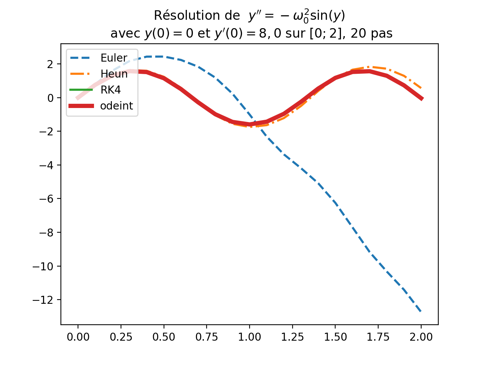

Chenevois-Jouhet-Junier
#imports pour tout le TP
import os.path
import numpy as np
import matplotlib.pyplot as plt
from scipy.integrate import odeint
jolis-dessins situé dans le répertoire de travail TP12 contenant le script. Avec Pyzo, il faut régler le répertoire de travail (point de départ du chemin relatif des ressources externes) en exécutant le script avec l’option Run as script ou la séquence de touches CTRL + SHIFT + E.pwd si l’interpréteur est Ipython.
def euler(F, a, y0, b, n):
"""Retourne le tableau des approximations
de y'=F(t,y) avec y(a)=y0 par la methode d'Euler avec un pas de 1/n
"""
les_yk = [y0] # la liste des valeurs calculées
t = a # le temps du dernier calcul
h = float(b-a) / n # le pas
dernier = y0 # la dernière valeur calculée
for i in range(n):
suivant = dernier + h*F(dernier, t) # le nouveau terme
les_yk.append(suivant) # on le place à la fin des valeurs calculées
t = t+h # le nouveau temps
dernier = suivant # et on met à jour le dernier terme calculé
return les_yk # c'est fini
"""
In [6]: euler(lambda y, t : y, 0, 1, 1, 10)
Out[6]:
[1,1.1,1.2100000000000002,1.3310000000000002,1.4641000000000002,1.61051,
1.7715610000000002,1.9487171,2.1435888100000002,2.357947691,2.5937424601]
"""
def heun(F, a, y0, b, n):
"""Retourne le tableau des approximations
de y'=F(t,y) avec y(a)=y0 par la methode de Heun avec un pas de 1/n
"""
les_yk = [y0] #la liste des valeurs calculées
t = a #le temps du dernier calcul
h = float(b-a) / n #le pas
dernier = y0 # la dernière valeur calculée
for i in range(n):
eul = dernier + h*F(dernier, t) # ce que propose Euler
suivant = dernier + h/2*(F(dernier, t) + F(eul, t+h)) #nouveau terme
les_yk.append(suivant) #on le place à la fin des valeurs calculées
t = t+h #nouveau temps
dernier = suivant #on met à jour le dernier terme calculé
return les_yk
def f1(z, t):
return z
"""
In [8]: heun(f1, 0, 1, 1, 2)
Out[8]: [1, 1.625, 2.640625]
"""#Exercice 2 Schéma numérique de Runge-Kutta (ordre 4)
def RK4(F, a, y0, b, n):
"""Retourne le tableau des approximations
de y'=F(t,y) avec y(a)=y0 par la methode de RK4 avec un pas de 1/n
"""
les_yk = [y0] # la liste des valeurs calculées
t = a # le temps du dernier calcul
h = float(b-a) / n # le pas
dernier = y0 # la dernière valeur calculée
for i in range(n):
alpha = dernier + h/2*F(dernier, t)
beta = dernier + h/2*F(alpha, t+h/2)
gamma = dernier + h*F(beta, t+h/2)
suivant = dernier + h/6*(F(dernier, t) + 2*F(alpha, t+h/2) +
2*F(beta, t+h/2) + F(gamma,t+h)) # le nouveau terme
les_yk.append(suivant) # on le place à la fin des valeurs calculées
t = t+h # le nouveau temps
dernier = suivant # et on met à jour le dernier terme calculé
return les_yk
"""
In [10]: RK4(f1, 0, 1, 1, 2)
Out[10]: [1, 1.6484375, 2.71734619140625]
"""
def exo3():
"""Comparaison des méthodes Euler, Heun, RK4, odeint (pas variable)
sur le problème de Cauchy y'=y avec y(0)=1 pour n=4, n=10, n=100, n=1000"""
e = np.exp(1)
print("exp(1)=%.15f"%e)
#500 temps pour représenter la fonction exponentielle sur les graphiques
tcontinu = np.linspace(0, 1, 500)
#y exact (ou presque)
yexpo = np.exp(tcontinu)
#comparaison numérique pour 10, 100, 1000 temps
for n in [4, 10, 100, 1000]:
t = np.linspace(0,1,n+1)
yodeint = odeint(lambda z, t : z, 1, t)
yeuler = euler(f1, 0, 1, 1, n)
yheun = heun(f1, 0, 1, 1, n)
yrk4 = RK4(f1, 0, 1, 1, n)
eul, heu, rk4, od = [y[-1] for y in [yeuler, yheun, yrk4, yodeint]]
print("Pour n=%i :\n\t\t%.15f\t%.15f\t%.15f\t%.15f"%(n,eul,heu,rk4,od))
print("Erreurs absolues : \n\t\t%.15f\t%.15f\t%.15f\t%.15f\n"
%(abs(eul-e), abs(heu-e), abs(rk4-e),abs(od-e)))
#graphique
plt.plot(t, yeuler,color='red', linestyle='dashed', label='Euler')
plt.plot(t, yheun,color='navy',linestyle='dotted', label='Heun')
plt.plot(t, yrk4,color='blue',linestyle='solid', label='RK4')
plt.plot(t, yodeint,color='green',linestyle='dashdot', label='odeint')
plt.plot(tcontinu, yexpo,color='black',linestyle='solid',linewidth=1.5, label='expo')
plt.legend(loc = 'upper left')
plt.title(r"Comparaison (avec un pas de $1/%s$) des methodes pour $y'=y$"%n)
plt.savefig(os.path.join(REPERTOIRE,
'comparaison-methodes-%s-pas.png'%n), dpi=80)
#plt.show()
plt.clf() # faire de la place pour une nouvelle figure
"""
>>> exo3()
exp(1)=2.718281828459045
Pour n=4 :
2.441406250000000 2.694855690002441 2.718209939201323 2.718281903130344
Erreurs absolues :
0.276875578459045 0.023426138456604 0.000071889257722 0.000000074671299
Pour n=10 :
2.593742460100000 2.714080846608224 2.718279744135166 2.718281900949100
Erreurs absolues :
0.124539368359045 0.004200981850821 0.000002084323879 0.000000072490055
Pour n=100 :
2.704813829421526 2.718236862559957 2.718281828234404 2.718281899096809
Erreurs absolues :
0.013467999037519 0.000044965899088 0.000000000224641 0.000000070637764
Pour n=1000 :
2.716923932235896 2.718281375751763 2.718281828459025 2.718281949830612
Erreurs absolues :
0.001357896223149 0.000000452707282 0.000000000000020 0.000000121371567
"""On vectorialise en posant \(Y(t)= (y(t), y'(t))\) et \(F(Y(t), t)=(y'(t), -sin(y(t)))\)
On a donc F de \(\mathbb{R}^2 \times \mathbb{R}\) dans \(\mathbb{R}^2\) telle que \(F((a,b), t) = (b, -sin(a))\).
def f_pendule(z, t):
y, yp = z #y=z[0] et yp=z[1]
return np.array([yp, -31.36*np.sin(y)])
def exo4():
"""Fonction test de l'exo 4
Approximation de la solution de y'' = -(omega_0)^2*sin(y) sur [0;2]
avec y(0)=0 et y'(0)=8"""
#Y est un tableau d'array qui sont les approximations
#de (y,y') aux temps tk=10k/100 (0<=k<=100)
Y = euler(f_pendule, 0, np.array([0,8]), 2, 100)
t = np.linspace(0, 2, 101)
Yarray = np.array(Y)
plt.plot(t, Yarray[:, 0]) #on extrait la première colonne de Y
plt.title(u"Résolution (Euler) de $y''=-\omega_{0}^{2}\sin(y)$ avec \n $y(0)=0$ et $y'(0)=8,0$ sur $[0;2]$, $100$ pas")
plt.savefig(os.path.join(REPERTOIRE,'exo4-pendule-amorti.png'), dpi=200)
# plt.show()
plt.clf() # faire de la place pour une nouvelle figure

def exo5():
"""Fonction test de l'exo 5
Solutions de y'' = -(omega_0)^2*sin(y) sur [0;2]
avec y(0)=0 et y'(0)=8
pour n dans {20,100,1000}"""
#Y est un tableau d'array qui sont les approximations
#de (y,y') aux temps tk=10/k (0<=k<=100)
methode = [euler, heun, RK4, odeint]
#couleur = ['red', 'blue', 'green', 'black']
style = ['--','-.','-','-']
width = [2, 2, 2, 4]
etiquette = ['Euler', 'Heun', 'RK4', 'odeint']
for n in [20, 100, 1000]:
t = np.linspace(0, 2, n+1)
for i in range(4):
if i < 3:
Y = methode[i](f_pendule, 0, np.array([0,8]), 2, n)
Yarray = np.array(Y)
#on extrait la première colonne de Y
plt.plot(t, Yarray[:, 0], linestyle=style[i],
linewidth=width[i], label=etiquette[i])
else:
Y = odeint(f_pendule, np.array([0,8]), t)
Yarray = np.array(Y)
#on extrait la première colonne de Y
plt.plot(t, Yarray[:, 0], linestyle=style[i],
linewidth=width[i], label=etiquette[i])
plt.title(u"Résolution de $y''=-\omega_{0}^{2}\sin(y)$ \n avec $y(0)=0$ et $y'(0)=8,0$ sur $[0;2]$, %d pas"%n)
plt.legend(loc = 'upper left')
plt.savefig(os.path.join(REPERTOIRE,'exo5-%d-pas.png'%n), dpi=200)
plt.clf() # faire de la place pour une nouvelle figure
def exo6():
"""Fonction test de l'exo 6
Solutions de y'' = -(omega_0)^2*sin(y) sur [0;6]
avec y(0)=0 et y'(0)=11.2
La solution théorique est strictement croissante
et converge vers pi
"""
#Y est un tableau d'array qui sont les approximations
#de (y,y') aux temps tk=10/k (0<=k<=100)
methode = [euler, heun, RK4, odeint]
#couleur = ['red', 'blue', 'green', 'black']
style = ['--','-.','-','-']
width = [2, 2, 2, 4]
n = 1000
etiquette = ['Euler', 'Heun', 'RK4', 'odeint']
t = np.linspace(0, 6, 1+n)
for i in range(4):
if i < 3:
Y = methode[i](f_pendule, 0, np.array([0,11.2]), 6, n)
else:
Y = methode[i](f_pendule, np.array([0,11.2]), t)
Yarray = np.array(Y) #conversion en array pour le slicing
#on extrait la première colonne de Y
plt.plot(t, Yarray[:, 0], linestyle=style[i],
linewidth=width[i], label=etiquette[i])
plt.legend(loc = 'upper left')
plt.title(u"Résolution de $y''=-\omega_{0}^{2}\sin(y)$ avec \n $y(0)=0$ et $y'(0)=11.2$ sur $[0;6]$, $1000$ pas")
plt.savefig(os.path.join(REPERTOIRE,'exo6-pendule-limite.png'), dpi=200)
plt.clf() # faire de la place pour une nouvelle figureOn va résoudre numériquement l’équation différentielle d’ordre \(2\) : \(\frac{d^{2}}{d t^{2}} \overrightarrow{OM(t)}= g\) où \(g\) est l’accélération de la pesanteur.
On vectorialise en dimension \(4\) en résolvant :
\[Y' = F(Y,t) \text{ où } Y=(x,z,x',z') \text{ et } F(Y,t) = (x',z',x_g,z_g)\]
g = 10. #accélération de la pesanteur
def Flibre(V, t):
x, z, xp, zp = V
return np.array([xp, zp, 0, -g])
def chutelibre(v0, alpha, tmax, n):
"""
parabole approchée avec odeint
sur l'intervalle entre 0 et tmax avec n temps
et les conditions initiales vo et alpha
"""
t = np.linspace(0, tmax, n+1)
yodeint = odeint(Flibre, np.array([0, 0, v0*np.cos(alpha),
v0*np.sin(alpha)]), t)
#on ne garde que les z>=0
#puis on convertit en array pour le slicing
Yodeint = np.array([y[:2] for y in yodeint if y[1] >= 0])
plt.plot(Yodeint[:,0], Yodeint[:,1])
def exo7question3(v0, tmax, n):
angle = np.linspace(0, np.pi/2, 50)
for alpha in angle:
chutelibre(v0, alpha, tmax, n)
#tracé de la parabole de surete
#d'équation z = v0**2/(2*g)-g/(2*v0**2)*x**2
#elle coupe l'axe des abscisses en v0**2/g
x=np.linspace(0,v0**2/g,100)
plt.plot(x,v0**2/2/g-g/v0**2*x*x/2,linewidth=4,color='black')
plt.xlabel(r'$x(t)$',fontsize=18)
plt.ylabel(r'$z(t)$',fontsize=18)
plt.title('Chutes libres')
plt.savefig(os.path.join(REPERTOIRE,'exo7-libre-vitesse-%i.png'%v0), dpi=60)
plt.clf() # faire de la place pour une nouvelle figure
"""
>>> exo7question3(10, 10, 1000)
"""\[Y' = F(Y,t) \text{ où } Y=(x,z,x',z') \text{ et } F(Y,t) = (x',z',-k_m \times x',-z_{g}-k_m \times z')\]
k_m = 4 #coefficient de frottement
def Famortie(V,t):
x, z, xp, zp = V
return np.array([xp, zp,-k_m*xp,-g-k_m*zp])
def chuteamortie(v0, alpha, tmax, n):
t = np.linspace(0, tmax, n+1)
yodeint = odeint(Famortie, np.array([0, 0, v0*np.cos(alpha),
v0*np.sin(alpha)]), t)
#on ne garde que les z>=0
#puis on convertit en array pour le slicing
Yodeint = np.array([y[:2] for y in yodeint if y[1] >= 0])
plt.plot(Yodeint[:,0], Yodeint[:,1])
def exo7question5(v0, tmax, n):
angle = np.linspace(0, np.pi/2, 50)
for alpha in angle:
chuteamortie(v0, alpha, tmax, n)
plt.xlabel(r'$x(t)$',fontsize=18)
plt.ylabel(r'$z(t)$',fontsize=18)
plt.title('Chutes amorties')
plt.savefig(os.path.join(REPERTOIRE,'exo7-amortie-vitesse-%i.png'%v0), dpi=60)
plt.clf() # faire de la place pour une nouvelle figure
"""
>>> exo7question5(10, 10, 1000)
"""
def Ford(Y,t,ordre,alpha,beta):
A, B, C = Y
return np.array([-alpha*A**ordre, alpha*A**ordre - beta*B**ordre,
beta*B**ordre])
def exo8(F, ordre):
for alpha, beta in [(1, 1), (10, 1), (1, 10)]:
Fbis = lambda Y, t : F(Y, t, ordre, alpha, beta)
t = np.linspace(0, 6, 1000)
yodeint = odeint(Fbis, np.array([1, 0, 0]), t)
Yodeint = np.array(yodeint)
plt.plot(t, Yodeint[:,0], linestyle='--') #tracé de la concentration de A
plt.plot(t, Yodeint[:,1],linestyle='-.') #tracé de la concentration de B
plt.plot(t, Yodeint[:,2]) #tracé de la concentration de C
plt.title(r'Concentrations chimiques $\alpha$=%d, $\beta$=%d'%(alpha,beta))
plt.legend(['[A]', '[B]', '[C]'], loc = 'center right')
plt.grid(True)
plt.savefig(os.path.join(REPERTOIRE,'exo8-ordre%d-alpha%d-beta%d.png'%(ordre,alpha,beta)))
plt.clf() # faire de la place pour une nouvelle figure
sympy.dsolve du module de calcul formel sympy
"""
In [18]: import sympy
In [19]: from sympy.abc import f, x
In [20]: diffeq = sympy.Eq(f(x).diff(x,x) + 2*f(x).diff(x) - 3*f(x),0)
In [21]: diffeq
Out[21]: -3*f(x) + 2*Derivative(f(x), x) + Derivative(f(x), x, x) == 0
In [22]: sympy.dsolve(diffeq, f(x))
Out[22]: f(x) == C1*exp(-3*x) + C2*exp(x)
"""La solution particulière pour les conditions initiales \(y(0)=1\) et \(y'(0)=-3\) est \(y(x) = e^{-3x}\)
Elle vérifie pour tout réel \(x\), \(y'(x) = -3 \times e^{-3x}\) et donc \(y'(x)+3y(x)=0\).
C’est vrai pour \(x=0\).
Dès les premières étapes du schéma, avec les petites approximations, cette égalité n’est plus vérifiée (les réels sont représentés de façon approchée par des flottants).
A chaque étape on résout alors numériquement des équations différentielles vérifiant des conditions initiales légèrement différentes.
Leurs solutions vont comporter un terme en \(e^{x}\) qui va diverger quand \(x\) va tendre vers \(+\infty\).
def instable1(Y, t):
y, yp = Y
return np.array([yp, -2*yp + 3*y])
def exo9(F, y0, yp0):
methode = [euler, heun, RK4, odeint]
if F.__name__ == "instable1":
tmax = [37, 36, 35, 80] #tmax varie selon le schéma
else:
tmax = [37, 36, 35, 26]
style = ['--','-.','-','-']
width = [2, 2, 2, 4]
n = 1000
for i in range(4):
t = np.linspace(0, tmax[i], 1+n)
if i < 3:
Y = methode[i](F, 0, np.array([y0, yp0]), tmax[i], n)
else:
Y = methode[i](F, np.array([y0, yp0]), t)
Yarray = np.array(Y) #conversion en array pour le slicing
#on extrait la première colonne de Y
plt.plot(t, Yarray[:, 0], linestyle=style[i],linewidth=width[i])
plt.legend(['Euler', 'Heun', 'RK4', 'odeint'], loc = 'upper left')
plt.title('Une situation instable')
plt.savefig(os.path.join(REPERTOIRE,'exo9-%s.png'%F.__name__), dpi=60)
plt.clf() # faire de la place pour une nouvelle figure
"""
>>> exo9(instable1,1,-3)
"""On résout l’équation translatée \(y'' = -2y'+3y - 1\) en prenant comme conditions initiales \(y(0)=\frac{4}{3}\) et \(y'(0)=-3\)
La solution générale de cette équation est \(y{\left (x \right )} = C_{1} e^{- 3 x} + C_{2} e^{x} + \frac{1}{3}\).
La solution particulière est \(y(x)= e^{- 3 x}\).
On observe encore une instabilité des schémas numériques de résolution.
Portrait de phase \((x, x')\) pour la résolution numérique avec odeint de l’équation de Vanderpol \(x'' = \mu \times (1-x^2) \times x' - x\)
mu = 1
def vanderpol(X,t):
x, xp = X
return np.array([xp, xp*mu*(1 - x**2)-x])
def exo10():
style = ['--','-.','-']
width = [2, 2, 4]
cinit = [[0, 3], [0.1, 0], [3, 0]]
tmax = 50
n = 1000
for i in range(3):
t = np.linspace(0, tmax, 1+n)
Y = odeint(vanderpol, cinit[i], t)
Yarray = np.array(Y) #conversion en array pour le slicing
#on extrait la première colonne de Y
plt.plot(Yarray[:, 0], Yarray[:, 1], linestyle=style[i],
linewidth=width[i])
plt.axhline(color='black')
plt.axvline(color='black')
plt.xlabel(r'$x(t)$',fontsize=18)
plt.ylabel(r"$x'(t)$",fontsize=18)
plt.grid()
plt.legend([r"$(x(0),x'(0))=(0,3)$", r"$(x(0),x'(0))=(1/10,0)$",
r"$(x(0),x'(0))=(3,0)$"], loc = 'upper left')
plt.savefig(os.path.join(REPERTOIRE,'exo10.png'), dpi=80)
plt.clf() # faire de la place pour une nouvelle figure